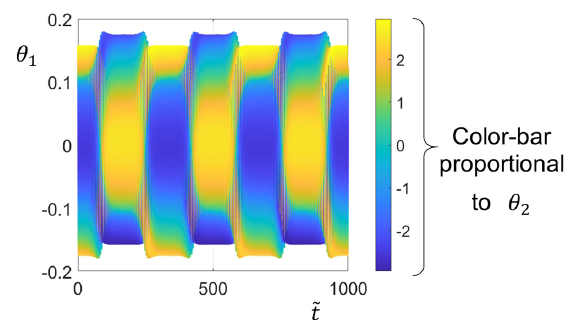
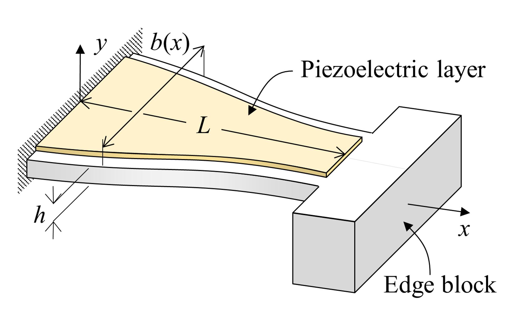
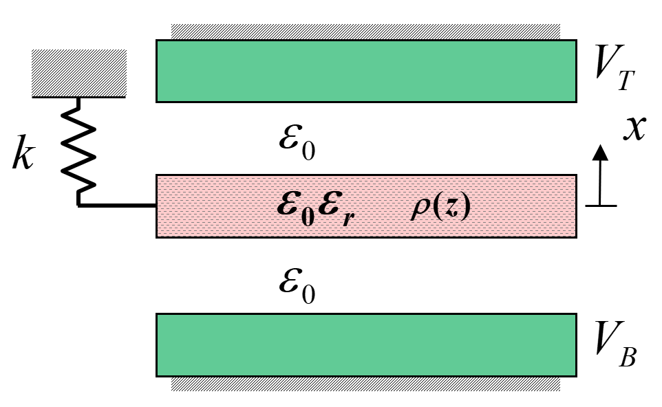
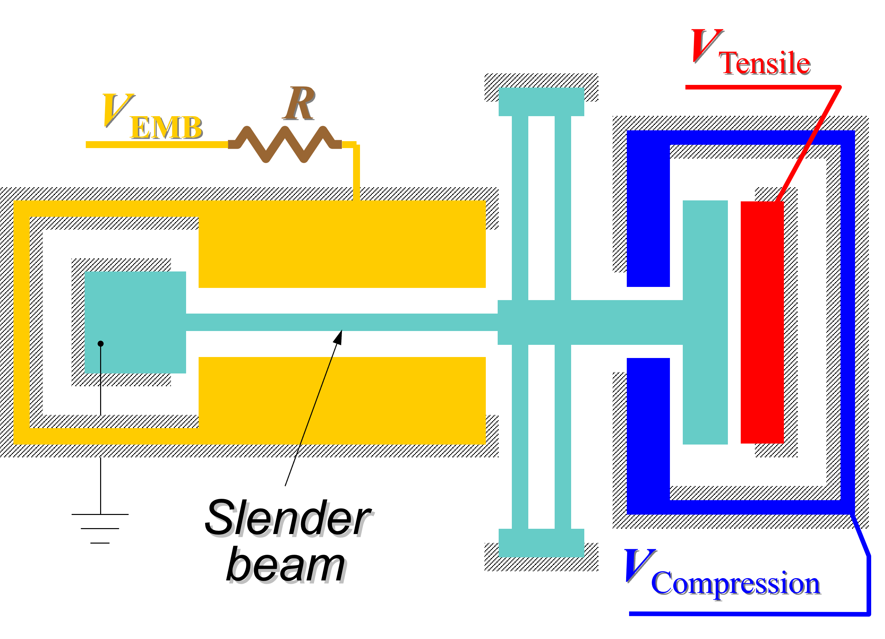
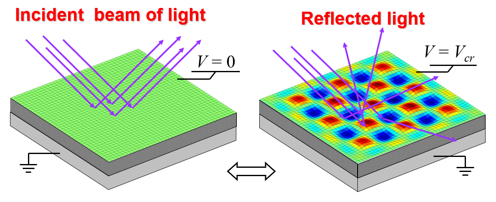
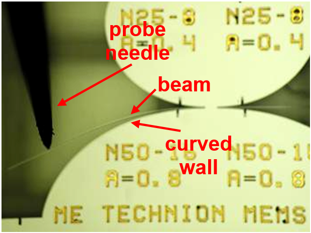

The intermediate frequency effect and Dzhanibekov-like transitions in the response of the anisotropic pendulum
The anisotropic pendulum has three distinct primary periodic motions of free vibration, but only if the level of energy is above a critical threshold. It is shown that the primary periodic motion with the intermediate frequency is inherently unstable and exhibits Dzhanibekov-like transitions. This work explains the sensitivity of the Foucault pendulum to even a slight anisotropy of its suspension – a problem that Léon Foucault identified in 1851.
Periodic Dzhanibekov-like transitions of the double pendulum

The double pendulum is a well-known nonlinear dynamic system. Many previous studies considered one or more of its three categories of response: periodic (a.k.a. normal), regular (a.k.a. quasi-periodic), and chaotic. In this study, we show a new fourth category of response that we term Dzhanibekov-like transitions. It begins with a nearly periodic response, then in a fast transition, it diverges and converges to a second nearly periodic response. These sequential transitions between the two nearly periodic responses are repeated at regular time intervals. We demonstrate symmetric and asymmetric Dzhanibekov-like transitions.
The elastic pendulum - Dzhanibekov-like transitions of symmetric and asymmetric periodic responses
It has been shown in many previous studies that the free-vibration response of the elastic pendulum can be chaotic, quasi-periodic, or periodic. We present a new category of response: a slow sequential, back-and-forth switching between a nearly periodic response and its mirror-image. This switching resembles the Dzhanibekov effect. We show that the frequency of switching is unrelated to the frequency of the pendulum swings but rather depends on initial conditions.
Flexural vibrations of anisotropic thin rotating rings

We present a rigorous analysis of the in-plane flexural vibrations of a thin rotating circular ring. The ring is made from an anisotropic material with cubic symmetry, as in (100) single-crystalline silicon. In this study, both the natural frequencies and their related mode shapes are analytically derived using an asymptotic method, for the modes numbered n=2, 3 and 4. We show that due to a rate of rotation, these modes exhibit a precession-like response, which was previously shown to occur in isotropic rings. However, for rotating rings that are made from an anisotropic material, we show that the even-ordered modes n=2 and n=4, exhibit a 'breathing' phenomenon in the precessing mode.
D. Rosenstock and D. Elata, "On the flexural in-plane vibrations of a thin circular ring made from an elastic solid with cubic crystalline symmetry". Journal of Sound and Vibration, 562, 2023, 117842. DOI: 10.1016/j.jsv.2023.117842
D. Rosenstock and D. Elata, "Flexural vibrations of anisotropic thin rotating rings". Journal of Sound and Vibration, 604, Art no. 118924, 2025. DOI: 10.1016/j.jsv.2024.118924
On the optimal planform of a cantilever unimorph piezoelectric vibrating energy harvester

This work considers piezoelectric vibrating energy harvesters, that are constructed from an unimorph cantilever with a massive edge block. The optimal response of such a harvester is achieved when the amplitude of the axial strain in the piezoelectric layer is uniform. The variation of the width along the cantilever is a design choice and we show, for the first time ever, an analytic proof that the optimal planform is a trapeze, where the cantilever tapers from its clamped edge towards the edge block. The predictive capabilities of our model are validated by comparison to finite element simulations.
E. Salman, S. Lustig and D. Elata, "On the optimal planform of a cantilever unimorph piezoelectric vibrating energy harvester". Smart Mater. Struct., 33, 035029 (7pp), 2024. DOI: 10.1088/1361-665X/ad28d0
E. Salman, D. Rosenstock and D. Elata, "The Optimal Axial Strain Distribution in a Piezoelectric Vibrating Energy Harvester (PVEH)". Journal of Sensors and Sensor Systems, 14, 147–152, June 2025. DOI: 10.5194/jsss-14-147-2025
E. Salman, S. Lustig and D. Elata, "The optimal planform of a cantilever unimorph piezoelectric vibrating energy harvester (PVEH) that has a device-layer edge block". Journal of Sensors and Sensor Systems, 14, 153–159, June 2025. DOI: 10.5194/jsss-14-153-2025
Harmonic biasing in a double-sided comb-drive resonator, for resolving feed-through issues in low-power driving

We demonstrate a novel technique for operating a differentially-driven and differentially-sensed double-sided comb-drive resonator. The resonator is driven by application of two out-of-phase ac signals to the drive stators, while the rotor is subjected to a pure harmonic signal at the same frequency as of the ac driving signals. In this mode of operation, no dc bias is necessary. This strategy results in two frequency-mixing operations, such that a clear response can be sensed at the 3rd harmonic of the drive signal. With harmonic biasing, the resonator is insensitive to both feed-through currents that result from direct capacitive cross-coupling of sense and drive pads, and to feed-through currents that result from imbalanced sense ports due to packaging and setup.
What is the resonance of a linear mechanical resonator, peak amplitude of displacement or peak amplitude of velocity?

There is some ambiguity in literature with respect to the resonance response of mechanical resonators. Should resonance be associated with the peak amplitude of velocity or should it be associated with the peak amplitude of displacement? Another ambiguity relates to the definition of phase: should phase relate velocity or displacement to the driving force? These two issues are addressed here, and it is shown why resonance should be associated with peak amplitude of velocity, and not with peak amplitude of displacement.
Parametric resonance in a double-sided comb-drive actuator with a floating rotor

The common double-sided comb-drive electrostatic resonator responds as a parametric resonator when its rotor is electrostatically floating. Small ac signals that drive the system are sufficient to produce a large amplitude of harmonic response, without requiring any dc bias. We demonstrate that the system can be driven to resonance, by driving it at unit-fractions of the fundamental frequency.
D. A. Kassie, S. Levi and D. Elata, "A double-sided comb-drive actuator with a floating rotor: Achieving a strong response while eliminating the dc bias", IEEE-JMEMS, 29(5), 1173–1179, 2020. DOI: 10.1109/JMEMS.2020.3004831
D. A. Kassie and D. Elata, "Parametric resonators with a floating rotor: sensing strategy for devices with an increased stiffness and compact design", IEEE-JMEMS, 30(3), 411–418, 2021. DOI: 10.1109/JMEMS.2021.3065424
Rigorous and insightful discussion of the piezoelectric coupling factor

The piezoelectric coupling factor is defined as the ratio between the converted energy and the supplied energy. This factor is often considered as a measure of the transduction efficiency of the material. Another definition of the coupling factor is a non-dimensional ratio of material coefficients. We show that in some specific cases, the two definitions are equivalent, but that in other cases they are incompatible. In addition, we show that in specific quasi-static loading cycles, the converted energy may be increased by a slight modification of the unloading part of the cycle.
Frequency matching of orthogonal wineglass modes in disk and ring resonators made from (100) silicon

Vibrational wineglass modes in disk and rings that are made from (100) silicon are considered. It is shown that all odd-ordered wineglass modes are necessarily frequency-matched, each with its orthogonal conjugate. In contrast, all even-ordered wineglass modes are likely not to be frequency-matched with their orthogonal conjugate. Some specific cases are presented that show that many wineglass modes do not have a rotational periodic symmetry. This is relevant to disks and rings that are driven and sensed by surrounding gap-closing electrostatic actuators.
MEMS parametric resonators

We present a MEMS realization of a classic parametric resonator. This parametric resonator is ideal in the sense that the electrostatic stiffness, which may be time-modulated, is not affected by motion. We also present a simple, efficient and intuitive model of parametric excitation. This model predicts the minimal modulation amplitude required to obtain an unbounded response in a parametric system with linear damping. We show experimental results in which the system is operated as a Meissner resonator.
S. Shmulevich, I. Hotzen and D. Elata, "A MEMS implementation of a classic parametric resonator", IEEE-JMEMS, 24(5), 1285–1292, 2015. DOI: 10.1109/JMEMS.2015.2402223
S. Shmulevich and D. Elata, "A MEMS implementation of the classic Meissner parametric resonator: exploring high-order windows of unbounded response", IEEE-JMEMS, 26(2), 325–332, 2017. DOI: 10.1109/JMEMS.2016.2645878
A piezoelectric twisting beam actuator

We demonstrated, for the first time ever, a piezoelectric beam actuator that responds in pure twist. The actuator is constructed from bulk PZT, and interdigitated electrodes that are rotated at 45º relative to the beam axis, are used for both poling and driving.
I. (Hotzen) Grinberg, N. Maccabi, A. Kassie, D. Elata, "A piezoelectric twisting beam actuator", IEEE-JMEMS, 26(6), 1279-1286, 2017. DOI: 10.1109/JMEMS.2017.2731120
I. (Hotzen) Grinberg, N. Maccabi, A. Kassie, D. Elata, "A pure-twisting piezoelectric actuator for tilting micromirror applications", IEEE-Transducers2017, Kaohsiung, Taiwan, June 18-22, 2017. DOI: 10.1109/TRANSDUCERS.2017.7994472
I. (Hotzen) Grinberg, N. Maccabi, A. Kassie, D. Elata, "A bulk-unimorph PZT actuator for large piston motions with 2-axis small angle adjustments", IEEE-Transducers2017, Kaohsiung, Taiwan, June 18-22, 2017. DOI: 10.1109/TRANSDUCERS.2017.7994468
Selective stiffening for enhancing and/or reversing the action of thermoelastic actuators

We present a thermoelastic micromotor for driving a rigid plate in an out-of-plane motion. Heating generates isotropic internal bending moments in the bimorphs. We show that this bending produces only small deflections of the plate. To improve the performance of the actuator, we use selective stiffeners to convert bending into torsional deformation of the spiral arms. In one orientation of the stiffeners, this conversion may be used to achieve a seven-fold increase of the thermoelastic response of the actuator. In a different orientation of the stiffeners, a complete reversal of the enhanced thermoelastic response is achieved.
Motion conversion mechanisms

We present a mechanism that converts in-plane to out-of-plane motions, which is fully compatible with mass-fabrication processes. By using selective stiffening we induce coupling between in-plane and out-of-plane responses of the mechanism. The conversion ratio is constant (i.e. linear) and it can be easily tailored by the number of stiffeners used in an otherwise unchanged design planform. The linearity of the motion conversion and the possibility to tailor it, are demonstrated experimentally using dedicated test devices.
I. (Hotzen) Grinberg, O. Ternyak, S. Shmulevich and D. Elata, "Selective stiffening for producing a mass-fabrication compatible motion conversion mechanism", IEEE-JMEMS, 24(6), 2101-2108, 2015. DOI: 10.1109/JMEMS.2015.2474151
I. (Hotzen) Grinberg, S. Shmulevich and D. Elata, "Two-axes actuators (x-z or x-θ) driven by in-line electrostatic comb-drives", IEEE-MEMS 2016, Shanghai, China, January 2016. DOI: 10.1109/MEMSYS.2016.7421841
Mechanical rechargeable battery

We present an electrostatic transducer in which voltage remains constant while charge is stored or extracted from the device. We achieve this by designing a nonlinear mechanical spring which exactly counteracts the non-linearity associated with electrostatic attraction forces. In essence the new device responds like a rechargeable battery, only here we store electric energy in elastic deformation, whereas in common batteries electric energy is stored as chemical potential.
Electromagnetic interaction force between two noncoaxial circular coils

The electromagnetic interaction forces between two noncoaxial circular coils have been previously analyzed. In the present study we revisit that solution and rederive these forces in a new functional form which provides new insight. Specifically, we revisit the notion of a neutral plane, at a critical vertical separation, in which alignment forces identically vanish. To this end we present a new simplified 2D model of the problem, in which it is easier to understand the nature of these forces. We show that our simplified 2D model captures the same response characteristics as in the more complex 3D problem of the interaction between coils.
Dynamically-balanced folded-beam suspensions

The standard folded-beam suspension is often used in electrostatic comb-drive resonators, with the intention of achieving a system with a linear response. However, we show that the harmonic response of the standard folded-beam suspension is not linear at the fundamental resonance frequency of the system. We show that even though the suspension is intended to respond as a linear spring, it is actually designed to do so only in static loading. We present a solution to the problem in the form of a new dynamically-balanced folded-beam suspension.
A gap-closing electrostatic actuator with a linear extended range

We present a gap-closing electrostatic actuator with a linear extended range. We achieve this by designing a nonlinear spring which exactly counteracts the nonlinear effects of electrostatic attraction forces in gap-closing actuators. We demonstrate this on parallel-plates actuators with a nominal gap of g=21µm. The initial response up to a deflection of g/4 is stable and is inevitably nonlinear, but beyond this point we demonstrate good linearity up to a displacement of 85% of the nominal gap. By introducing the nonlinear spring, we also avoid the pull-in instability, which would have occurred at a voltage of 31V. Instead, the system is stable, and the driving voltage may be increased up to 130V where the maximal displacement is achieved.
An electret gap-closing transducer with a linear response

The electromechanical response of a symmetric electret parallel-plates actuator is analyzed. The actuator is constructed from a dielectric plate that is suspended by a linear spring between two electrodes of a planar capacitor. The dielectric plate is loaded with fixed charge and is displaced due to the interaction between this charge and the electrostatic field. The analysis shows that the displacement of the electret actuator is a linear function of the driving voltage, and that a full range of stable motion can be achieved.
Electromechanical sensing of charge retention on floating electrodes

This paper considers the electromechanical response of gap-closing electrostatic actuators that are driven by both voltage and charge. It is shown that the system has two distinct pull-in voltages. It is also shown that the amplitude of charge on the floating electrode is proportional to the average of these two pull-in voltages. Test actuators were designed, fabricated, and characterized, and their measured response validates the theoretical predictions. A nondisruptive measurement of charge is proposed and demonstrated which enables monitoring charge decay over time.
Differential internal dielectric transduction of a Lamé-mode resonator

We implemented a parallel internal electrostatic transduction of a laterally driven Lamé-mode polysilicon resonator. This resonator is fabricated using a commercially available double nanogap process, and it is constructed from intertwined polysilicon comb-drives separated by a 50nm silicon nitride layer which mechanically couples the comb-drives. The transduction electrodes are optimally placed and oriented to maximize electromechanical transduction efficiency for the fundamental Lamé mode. A 128.15 MHz Lamé-mode resonator is driven and sensed differentially resulting in a motional resistance of 30 kΩ and quality factor of Q > 12000 in air.
Shield-layers for reducing thermoelastic damping in resonating Silicon bars

It is theoretically shown that thermoelastic incompatibility between Silicon structures and their native-oxide layers, induces thermoelastic damping. This damping dominates in structures that are packaged in vacuum and vibrate in pure axial motion. Analytic solutions of the thermoelastic response of axially loaded laminated bars are used to determine the material parameters which affect thermoelastic damping. The analysis suggests that thin shield-layers can significantly reduce thermoelastic damping which is associated with native-oxide layers in Silicon resonators.
Measuring residual stress in conductive layers

A novel method for measuring residual stress is proposed and analyzed in this study. The method is based on the electromechanical bifurcation response of a clamped-clamped beam. The stressed beam is subjected to a symmetric electrostatic field. The presented analysis shows that the critical voltage which induces the bifurcation response is a monotonic function of the residual stress. Furthermore, the electromechanical bifurcation occurs for both compressive and tensile residual stresses. It is shown that a single test structure can be used to measure residual stress in a continuous wide range.
Electromechanical buckling

The electromechanical buckling of a prestressed microbeam bonded to a dielectric elastic foundation is analyzed. It is shown that electrostatic forces can precipitately instigate buckling even when the prestress in the microbeam is lower than the critical value that would cause mechanical buckling. We show that electrostatic potential can be used to achieve on/off switching of surface flexures. An analytic solution of the critical electromechanical state is derived.
S. Abu-Salih and D. Elata, "Analytic postbuckling solution of a pre-stressed infinite beam bonded to a linear elastic foundation", Int. J. of Solids and Structures, 42(23), 6048–6058, 2005. DOI: 10.1016/j.ijsolstr.2005.03.006
D. Elata and S. Abu-Salih, "Analysis of electromechanical buckling of a prestressed microbeam that is bonded to an elastic foundation", Journal of Mechanics of Materials and Structures, 1(5), 911–923, 2006. DOI: 10.2140/jomms.2006.1.911
Measuring the strength of brittle microbeams

We have developed a device and method for measuring the strength of brittle microbeams which requires no measurements of forces or displacements. Euler Bernoulli beam theory trivially predicts that the maximal tension stress in an initially straight beam is linearly proportional to the curvature of the beam when it is bent. In our device we design a curved wall over which we wrap a test beam by application of an unmeasured force. The curvature of the curved wall increases linearly with circumferential distance along the wall. Therefore, the maximal curvature in the wrapped beam occurs at the last point of contact between the beam and the curved wall.